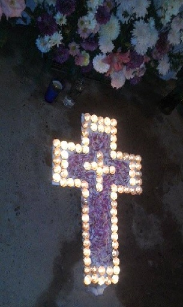

Fui criado por una familia principalmente católica y cristiana y se me inculco la creencia de Dios todo poderoso, Padre, Hijo y
Espíritu Santo. Creer en la vida después de la muerte y en el castigo Divino. Fui Bautizado y confirmado, pero por necedad propia
no fui a catecismo, por tanto, no he hecho la primera comunión.
El papa Francisco dijo alguna vez: "Es mejor ser ateo que un católico hipócrita”.
No me considero ateo, ni agnóstico, no confió en las palabras de las personas sobre la Fe. de cual religión es mejor o la correcta.
Aun con todo eso creo en Dios, rezo, mayormente en los malos tiempos y la duda, pero también en los buenos y la serenidad. Me
considero un mal católico, puesto que creo, pero no en todo, no sigo las reglas que dicta la iglesia y tampoco suelo ir a esta.
abecés dudo de la existencia de dios y critico mucho la religión.
Volver a Inicio